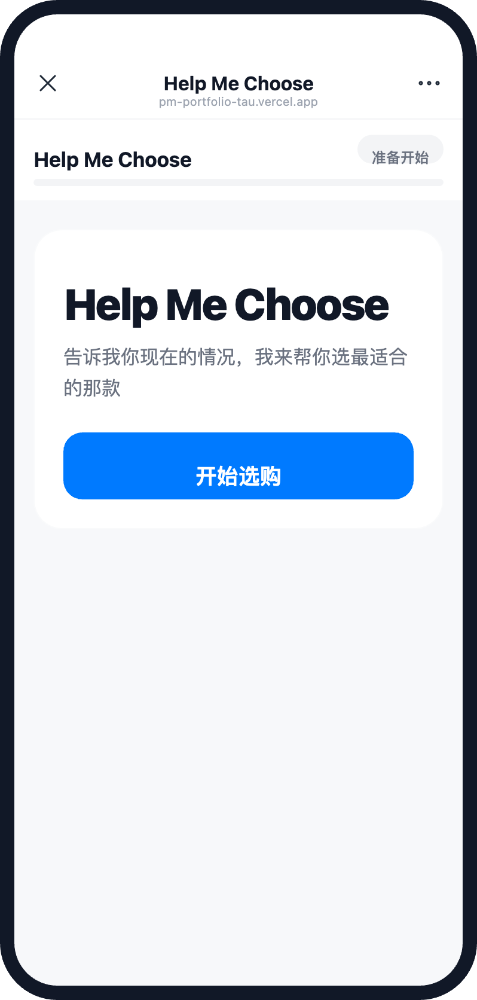
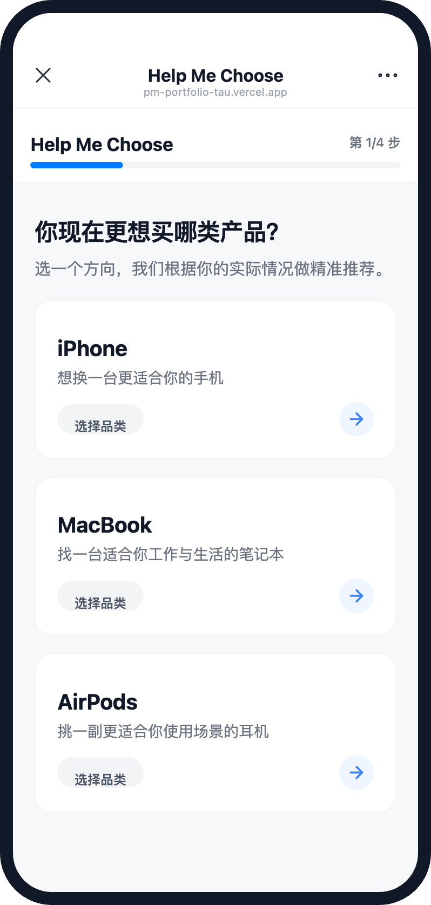
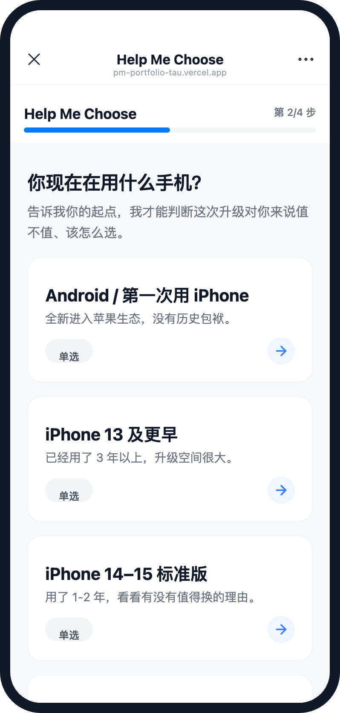
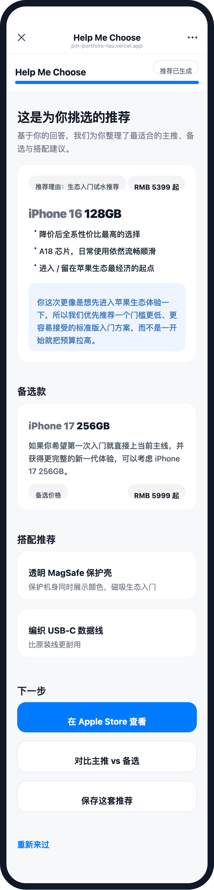
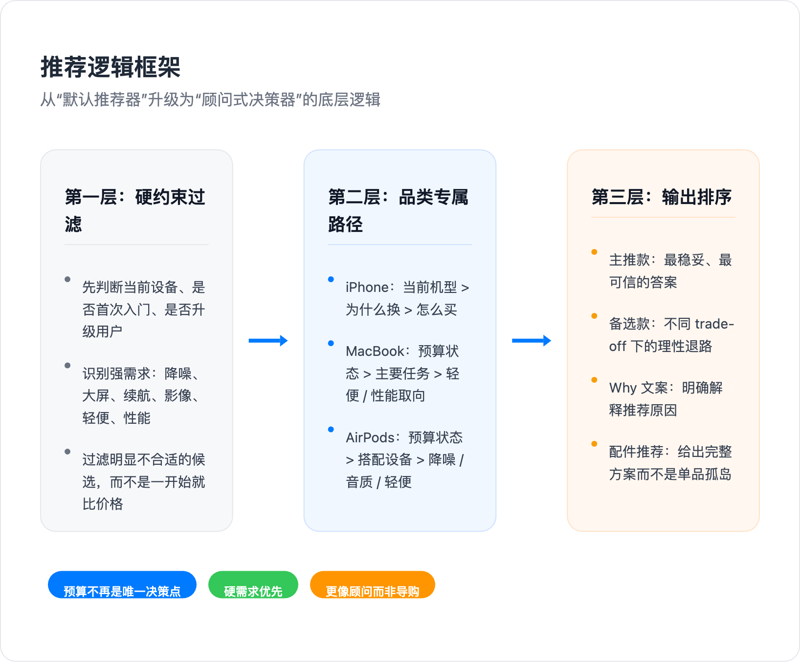
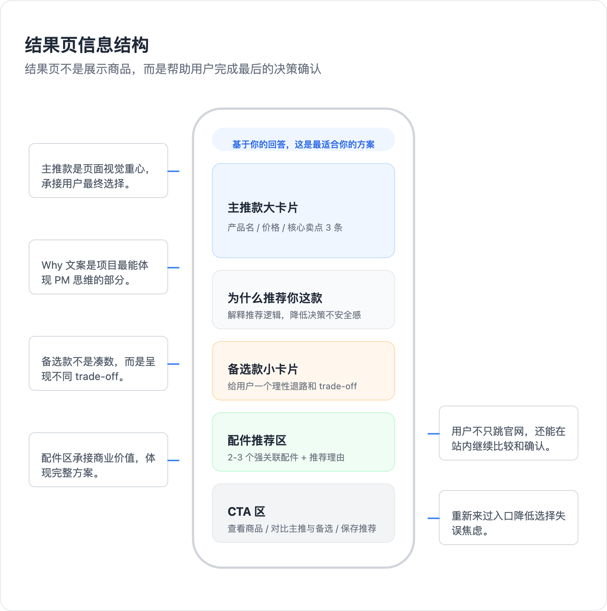
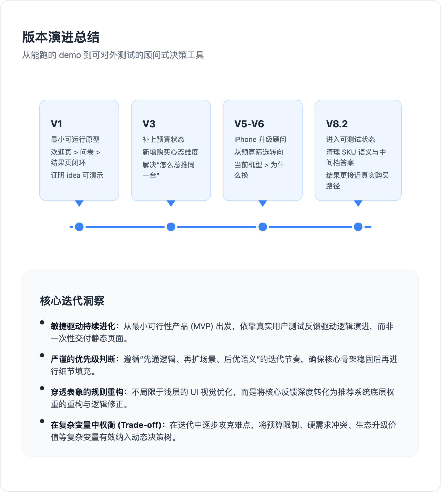

Help Me Choose 是一款面向 Apple 线上选购场景的顾问式决策工具。它通过少量高价值问题，帮助用户从“我已经知道要买哪条产品线”过渡到“我可以更有把握地锁定具体 SKU”。
项目并不是对传统参数对比页的平移，而是尝试以更接近顾问的方式，输出包含主推款、备选方案、推荐原因 (Why) 与配件联动的完整决策结果。核心目标是降低认知负荷与选择焦虑，并缩短探索到购买的路径。
Help Me Choose 是一款面向 Apple 线上选购场景的顾问式决策工具。它通过少量高价值问题，帮助用户从“我已经知道要买哪条产品线”过渡到“我可以更有把握地锁定具体 SKU”。
项目并不是对传统参数对比页的平移，而是尝试以更接近顾问的方式，输出包含主推款、备选方案、推荐原因 (Why) 与配件联动的完整决策结果。核心目标是降低认知负荷与选择焦虑，并缩短探索到购买的路径。
避免冗长问卷，每一道问题都必须对最终 SKU 的收敛产生真实影响。
先识别购买心态与硬需求，再引入预算维度，降低“被推销”的主观感受。
iPhone / MacBook / AirPods 采用不同决策路径，而不是套用同一套模板。
结果页不仅展示商品，还必须明确说明推荐动因，让结果更可信。
以一句明确的价值主张和一个强 CTA 降低进入门槛，让用户快速理解这是一个帮助选对款的工具，而不是参数列表。

不替用户做宽泛决定，而是确认其已知起点。这一设计减少了“我明明已经想买 iPhone，你却还在问我要不要买手机”的无效摩擦。

通过“你现在在用什么手机”切入 iPhone 路径，使系统从预算筛选器转向更符合真实心智的升级顾问逻辑。

结果页同时输出主推、备选、搭配建议与下一步动作，用于完成最后的决策确认，而不是把问题重新交回商品详情页。


输入：Android / 第一次用 iPhone + 想先进入苹果生态 + 控制预算
输出：iPhone 16 128GB 作为主推；原因不在于“最低配”，而在于“进入生态的最稳妥入口”。
输入：iPhone 14–15 Pro 用户 + 希望获得更明显升级感 + 愿意一步到位
输出：更高阶路径优先，重点考察续航、大屏与完整体验，而不是机械地回到标准版。
输入：用户连续表达“降噪”诉求
输出：系统必须让降噪能力拥有更高优先级，避免普通款出现在主推位。
输入：想要更大屏、更长续航，但不想直接上 Pro
输出：Plus 路径存在的意义，是提供一个真实、合理的中间档选择。

首轮测试中，最直接的反馈是系统过于容易给出“Apple 体系内的默认答案”，而没有先理解用户这次究竟想怎么花这笔钱。
V3 引入“控制预算 / 中间档 / 愿意多花 / 一步到位”等选项，使预算敏感型用户能够显式表达自己的购买方式。
后续反馈进一步指出，用户在 iPhone 上更关心“我现在用什么”“为什么要换”“这次升级值不值”，而不是单纯价格区间。
iPhone 路径逐步演进为“当前机型 → 换机原因 → 购买方式”，这也是整个项目差异化最明确的一次升级。
AirPods 测试暴露出一个典型问题：预算权重不应该压过强需求，尤其是降噪这种明确功能诉求。
后续逻辑明确将降噪、尺寸、续航、影像等强需求前置，从根源上减少“系统并不理解我”的感受。

完成欢迎页、问卷与结果页闭环，证明这一方向可以被演示、被讨论、被继续迭代。
加入预算状态后，系统不再只输出体系内的“稳妥标准答案”，而开始识别不同用户的购买心态。
iPhone 从统一预算筛选升级为更接近真实换机决策的顾问路径，并单独处理首次入门用户。
项目开始统一在售 SKU 与历史参考方案的表达，并引入更自然的中间档路径，使结果更贴近真实购买逻辑。
Help Me Choose 的核心价值不在于覆盖所有商品，而在于系统是否真正理解了用户的犹豫与取舍。
这个项目最重要的，并不是给用户一个答案，而是让用户相信：为什么这个答案适合自己。